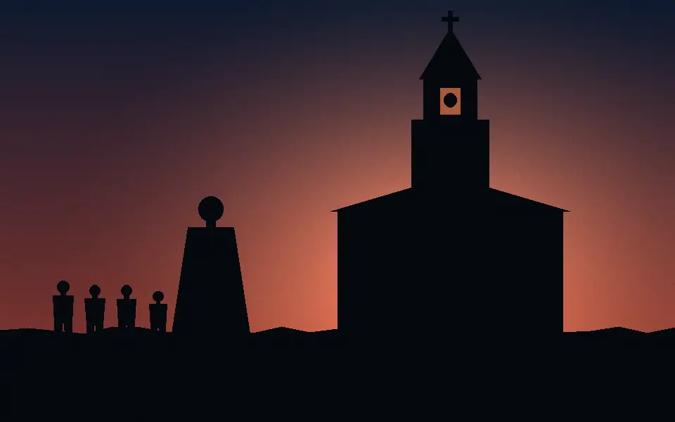
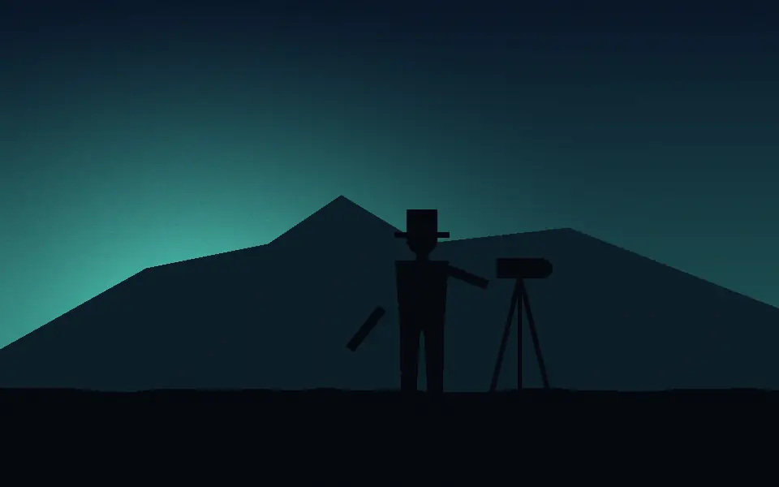
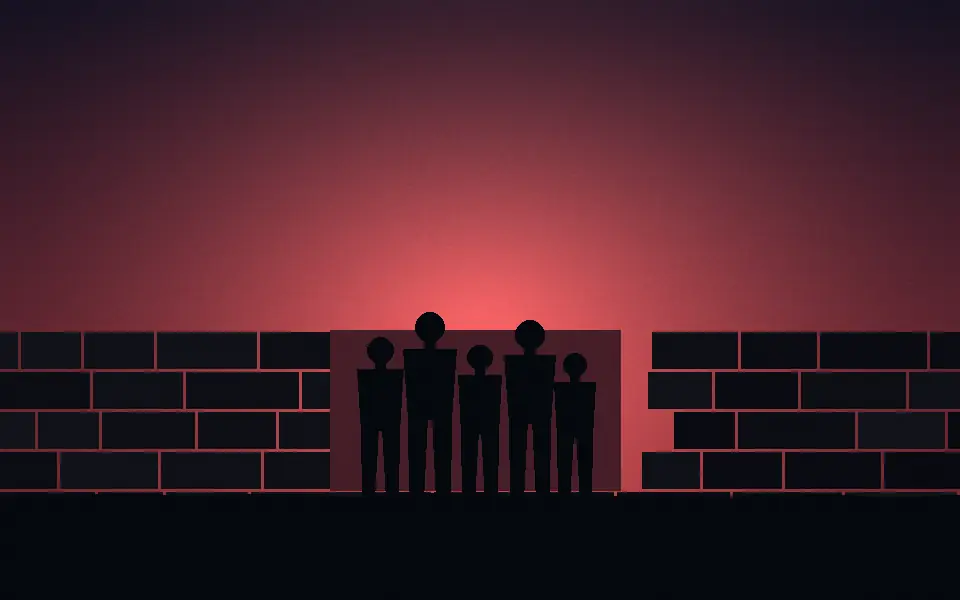
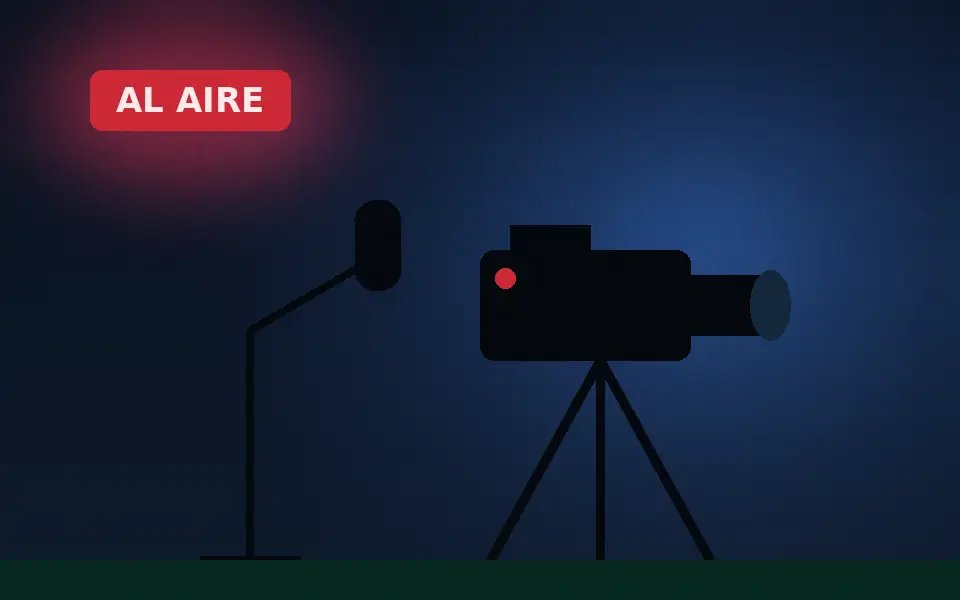

Tercer Tiempo, en vivo
Lunes y viernes, 8 pm
Hora del centro de México.
Qué es Tercer Tiempo Verlo en FacebookNoticias, memoria y programas del Cofre de Perote, hechos por peroteños con calidad de estudio.
¿Escuela o productor? Reserva el estudio →Lunes y viernes, 8 pm
Hora del centro de México.
Qué es Tercer Tiempo Verlo en FacebookLa pieza más vista de CREA en 2026: 65,479 reproducciones, de la serie documental por los 500 años de Perote.
Ver la serieUn cortometraje producido por CREA.
Todas las seriesPerote cumple 500 años y su historia tiene nombres propios. Archivo cuenta, pieza por pieza, a las personas y los episodios que hicieron a Perote.

La pieza que más ha visto Perote este año.
65,479 reproducciones
Quién fue y qué tiene que ver con el Perote de hoy.

Quiénes fueron y de dónde viene el nombre.
Aviso de transparencia: las ilustraciones de Archivo se generaron con inteligencia artificial. Son siluetas y no retratan a personas reales.
Ver Archivo en Facebook¿Tu marca en la historia de Perote? Cada episodio de Archivo acepta patrocinadores: de $2,500 a $3,000 por marca por episodio.
Patrocinar un episodioEl programa en vivo de CREA. Dos noches a la semana para ver, comentar y estar al tanto de Perote en tiempo real.
Desde $350 al mes tu marca aparece en cada emisión, frente a una audiencia que en su mayoría vive en Perote.
Ver paquetes y preciosFormatos distintos, mismo cuidado. Del documental al humor, todo se hace aquí.
Perote contado por quienes lo viven.
Viñetas sobre la vida en Perote. Si eres de aquí, te vas a reconocer.
Un personaje de la casa. También aparece en los videos de los patrocinadores de Tercer Tiempo.
Cortometraje de CREA.
Contenido para los más chicos de Perote.
Próximamente. Nombre por anunciar.Lo importante de Perote en tu correo, para empezar el día sabiendo qué pasa en tu municipio.
Fuente: estadísticas de la página de Facebook de CREA Contenidos, 2026.
Elige un paquete, escribe el nombre de tu negocio y mándanos el mensaje por WhatsApp. Lo demás lo vemos contigo.
Este es el mensaje que se va a enviar:
Enviar por WhatsAppQué pasa después
Graba tu podcast, transmite en vivo o lleva a tu grupo a aprender cómo se hace un programa. Equipo profesional sin salir de Perote.

Ilustración generada con IA. PENDIENTE: sustituir por fotos reales del estudio.
Para productores, creadores, negocios e instituciones que necesitan grabar o transmitir con calidad.
Tus alumnos aprenden a producir en un estudio real, con el equipo que usa CREA.
CREA Contenidos es un medio digital y un estudio de producción audiovisual de Perote, Veracruz. Queremos ser el medio más confiable de la región del Cofre de Perote, y eso se gana con trabajo bien hecho, una publicación a la vez.
Guardamos y contamos la historia de Perote para que no se pierda. Archivo es la prueba.
Producimos con equipo profesional y lo ponemos al servicio de Perote.
Dos décadas de relación con la gente, los negocios y las escuelas de Perote.
Cuando un contenido se hace con inteligencia artificial, lo decimos. Siempre.
Por mes: cintillo $350, video en pausa comercial $700, y menciones en vivo más video de Don Elmer $1,000, que incluye reporte mensual y factura.
De $2,500 a $3,000 por marca por episodio.
Gente de Perote. El 78.1% de nuestra audiencia en Facebook está en Perote y el 75.6% tiene entre 25 y 54 años.
El paquete de menciones en vivo más video de Don Elmer incluye factura y reporte mensual. Para los demás paquetes, pregúntanos por WhatsApp.
Lunes y viernes a las 8 pm, en vivo.
Sí. Tenemos cámaras PTZ y Sony, micrófonos RODE, Tascam Mixcast 4, vMix y OBS, chroma, teleprompter y cabina insonorizada y climatizada. Pide disponibilidad y costo por WhatsApp.
Sí. Escríbenos por WhatsApp con el nombre de tu escuela y te contamos cómo funciona.
Deja tu nombre y tu correo en la sección de newsletter. Es gratis.
Cuando un contenido se hace con IA, lleva un aviso que lo dice. Por ejemplo, las ilustraciones de Archivo.
Escoge lo que te toca.